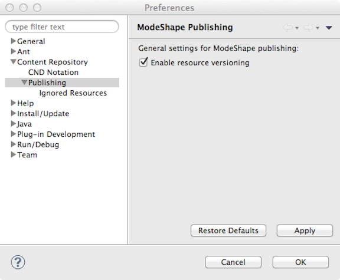
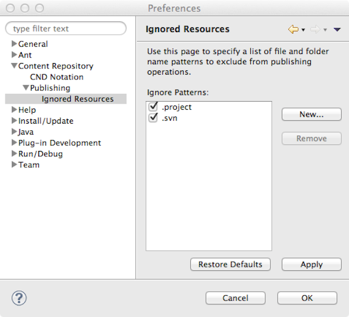

The ModeShape Preference Pages provide settings that allow you to personalize how ModeShape Tools' publishing operations are done. A publishing operation occurs when selected files in your local workspace are either uploaded (published) to, or deleted (unpublished) from, a specific ModeShape repository workspace. Here's a list of the ModeShape Tools preference pages:
The General Settings Preference Page currently only has a setting to control if published resources should be versioned by the ModeShape server. This versioning preference is used by the Publishing Operations Dialog.
Here is what the ModeShape General Settings Preference Page looks like:
The Ignored Resources Preference Page is where you identify the name patterns of files and folders that you do not want involved in your publishing operations.
Here is what the Ignored Resources Preference Page looks like:
If a file name matches one of these patterns, or is found in a folder whose name matches one of those patterns, it will not be
involved in either a publishing or unpublishing operation. To add new pattern click on the New... button to display
the following dialog: